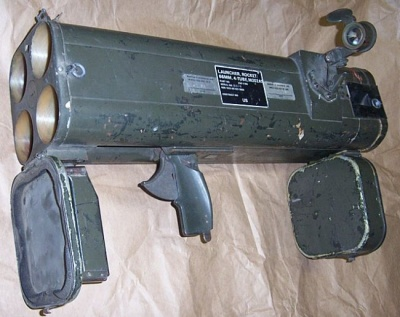

Sieben I agree with the office complex rundown also of note towards the end of chapter the scientist who falls down the shaft is triggered at a different time… I even heard a developer on a play through saying “it worked better in the original” and the scientist falls when you go upnear him rather than him just falling before you go in the shaft.
I Like the Idea of the Magnum with Laser attachment underneath more than the iron sights which is in game. Nice ideas for extra boosts or bonus abilities. It’s a bit like putting the deathmarch model in Single player but actually adding the feature of it having laser sight even with iron sights aswell. I think this would be really cool…
Glock with Silencer? this might also be an interesting attachment so you can use stealth with Glock conserving the crossbow ammo.
Re-animating the crowbar weapon to be much more like the original is very important it just looks wrong. It’s always been inferior. I think this is more important than map content.
The crossbow scope also seems to be one of those ongoing sagas it’s average that it is alright but it has never really worked properly or had some sort of issue with the scope. It looks better than it ever had done before now but it seems to be cursed. Ah well one day it will be fixed without breaking other stuff.
The Female Assassin is also another one of those things not working properly. I like the HL2 Beta combine Assassin Version… I was hoping the team would be able to use that as a replacement (reskin) once it was green-lit but anyway never happened but this is perhaps worst NPC in game kick should be a roundhouse kick and cloaking device not working also. This one could do with being redone as it is worst one of all npc.
I wish it was like HL2 Beta combine assassin… Should they Land in a Black Hawk rather than the Apache? Well it’s a potentially brilliant introduction to that enemy! Actually let me re-iterate this Black ops kills security guard then we hear the sound of rotor blades spinning up… as we turn the corner the Black Hawk is lifting off through the large opening in the roof from helipad once the helicopter is clear two doors slide across closing the Helipad off from the outside world. So there you have it very cool sequence that would be…
Another Introduction this time for the HECU - the first encounter should have them rappelling down walls of elevator shaft (or Outside elevator shaft) in we got hostiles rather than one riding down in the lift…before you fight them first time. this is the same room you get mp5 first time.
Been thinking quite a bit about introduction sequences and introduction of a new enemy via a scripted animation on first contact so as it has more punch and if you like more impressive introductions to new enemy types.
Bullsquid is alright but it could do with a re-skin…perhaps it’s mouth could be animated better but it looks nothing like headcrabs or houdeyes skin. Bullsquid looks more cartoon like rather than alien flesh.
more like this…but mouth not as red more dark
Been thinking about bullsquid introduction I would remove the two zombies in the freezer room and have the woman run away screaming from a bullsquid chasing her… This would be an adequete introduction. I would also place another one feasting on a carcus in this room.
I also wanted to add a bit about the trash compactor scene… Now this seems quite buggy with floating crates and the trash compactor walls are doors that start and stop which messes up the sound… I think the only way to do the trash compactor escape justice is with cinematic physics for the rubbish being crushed and to avoid all the physics bugging out. This would also potentially sort out the stuttering sound of the compactor also. Not looking for anything particularly flash but it might be a better way to deal with this part rather than rely on the physics engine freaking out.
I have actually just seen the latest updated version on youtube and it is much better now than it was before on trash compactor but the sound is still stop /start. I think the latest update looks very good but I think there are small instances of improvement to be found. Apart from crowbar and crossbow scope.
I saw someone modded Inbound with a suggestion of commercial helicopter swap for apache and construction workers… It is good.
In terms of Anormolous materials I will add the ideas for this chapter.
Put mirror in the changing rooms so player can see world model of themselves and change of costume.
Improve HEV suit chamber opening sequence with either video cutscene or dynamic lights and smoke on chamber. If done via cut-scene spawn player into suit after cut-scene.
Make test chamber / Resonance cascade more cinematic through either cut-scenes or scripted animation. Remove env_shake until Crystal goes in the beam. Start shaking on insertion.
When Gordon comes up out the elevator in Unforeseen consequences have a scripted animation sequence to introduce zombies. Have Barney Calhoun save you and be the character to escort you back to reception from where you are on your own.
EDIT:
Couple More things for Inspiration.
https://www.youtube.com/watch?v=l-U1i7FA_34
Add head humping animation to idle zombies… No need for Degenerate a corpse but Idle head humping is a very good one.
Add Particle effects similar to HL2 EP1 Flare (Red Light Sprite and smoke) Like Below
https://www.youtube.com/watch?v=occMRdCAb7Q
Add Particle Effect to Head crab Burrow (Dust puff Kick ups) This would Hide model clipping through the floor.
Add Legless Torso of this scientist where you pick up Tau Cannon
Comedy Gold… Zombie Torso run over by Abrams Tank Tracks
Update Tau Canon particles for the Beam like Hlaf Life 2 Buggy Tau Canon
https://youtu.be/OKIrFlUVp2A?t=42
Give Tau Canon Particles on hit like this video below for the Metal Sparks no matter what it Hits.
https://youtu.be/DYxitb71M7o?t=11
Houndeyes need to be programmed to Simultaneously Attack at the Same time (Damage Amplifier) So the player has to run away rather than cannon fodder kill them. And also Houndeye not being afraid to attack at greater Distance as the Hound eye will only attack when directly in front of the player.
https://www.youtube.com/watch?v=Lqxag2TDqtQ
Took a look at the code (Valve made the source code public on Github). The formula for a houndeye’s sonic attack damage if the squad size is more than 1 is:
BaseDamage + BaseDamage * (SquadBonus * (SquadSize - 1))
Base damage is determined by difficulty and/or cvar settings. SquadBonus is hard coded to be 1.1
That means a base damage of 10 and a squad size of 4 would be: 10 + 10 * (1.1 * 3) = 43
Also, the game checks if the houndeye has direct line of sight with the player, and will deal half damage if the player is behind an obstacle. This does not apply to other monsters; they take no damage if they are obscured.
Not bothered about Color Change but re-add Particles for Sonic Attack from HL2 Beta or Similar
Obviously these are all just ideas or ideas inspired from other media but take em or leave em
I see the orb teleport flashes fixed in latest update too  two thumbs up.
two thumbs up.
I think I have said all I have to say now It’s been nice seeing the latest version and looking forward to playing again soon.
Edit 2
Ok a couple more things I have thought of and these are mostly also quite small in scale sorry about this but I am getting these ideas out in the wild as potential changes / improvements / modifications.
Add Camera Bob to certain movement namely Crouch walking and Ladder Strafing… And perhaps, a slight bob to initial strafe movement like Deathmatch movement.
Make Crystal Cart a Vehicle with view model Hands on the Prop. Forward backward movement only enter and exit animations.
Make Barnacles Deadly for the player that once bitten it is game over… upon Bite trigger animated overlay on screen of interior of Barnacles mouth / stomach then fade to Red. The rules are the same then for both NPC and player.
I read about a sequence that consisted of using the power Loader under the players control (Via a control station or Levers) to defeat a Gargantua. This sounded an excellent Idea and I felt this was obviously teasing a vehicle in Inbound for the player and it is a shame this is not in the actual game. The Loader is such a good homage to aliens the movie it is a shame the feature to control a Loader in any shape or form does not exist and even the fact we never really see them used because it was by and large an unfinished idea. This sequence happened apparently by an abrams tank bursting through a door. There was to be a crate Puzzle also in which would be similar to opposing force crate puzzle. Even if not under player control it would be nice to see them included somewhere especially near at the Lambda complex part of the game. They feel like such a waste and they look really good.
Create Model for Commando Rocket Launcher for on a Rail Marines rocket outpost.

Add Impact sound for Crossbow Dart Hit Npc and world (can be the same sound or different)
In The Test Chamber on First Teleport in the original Half Life we have Green Lightning Flashes and Helmet Breathing sounds then black screen (something missing)?!? On this debate it seems to me Gordon Wears a Helmet going in to the Test Chamber but Losses it somewhere on Xen. This opens up a prospect of Having a cracked Glass overlay on the Helmet during the accident and having the Breathing Sound effects added. We could also find the Helmet again later on xen with cracked glass it also re-enforces it is not a dream. Using HL2 teleport effects would also be cool for continuity.
One more thing that has become a realization about the black ops assassins is that When Gordan is Apprehended in the room it is possible that it was Originally Planned that a Black Ops would have shot him with the crossbow (nero-toxic dart) to knock him out as their introduction would have been in conjunction with his apprehension. This is neither really here nor there but it is an interesting take on how he might of been apprehended before they got the silenced pistols as default. To complete the Cut-scene show Gordan being dropped from crane Magnet into Trash.
Put dead Assassin in the water where you first get the crossbow with shark cage if associated with assassins.
On Retinal Scanners Add texture Image of Retinal Scan on a screen / panel by the reader Goggles when used. Then Return to default texture. Perhaps remove number buttons or Black Mesa Logo and replace with screen on model. Seems Retinal scanner also meant to have blue light for goggles when activated.
Add Diamond shape around crosshair for the Visully impaired similar to PS2 HD port.
Fix Guargantua footstomp attack.
Add secondary fire to Gluon gun seeing as Hivehand now has cut secondary attack… Looked at the combineguard gun attack and like the darkmatter energy ball this could be added to the current spin up of the Gluon. Not sure what the seconday attack was meant to be honestly. combineguard attack too slmilar to tau canon attack perhaps it was meant to be like fast laser gun? Black hole gun?
Show Rifts occurring using code and effects for cut Blackhole grenade weapon EP1. Have Props and human npc’s being sucked into another dimension in various areas to explain the resonance cascade effects. Yellow Orange Lightning before the rifts
Once agin just Ideas and I really am done now :)

 And I can’t disable emojies.
And I can’t disable emojies.
 This feature would add more surprise and replayability, as the skill of each single marines wouldn’t be the same in every game, and it would bring more realism.
This feature would add more surprise and replayability, as the skill of each single marines wouldn’t be the same in every game, and it would bring more realism.")


{kind=link}
{kind=link}
{kind=link}
{kind=link}